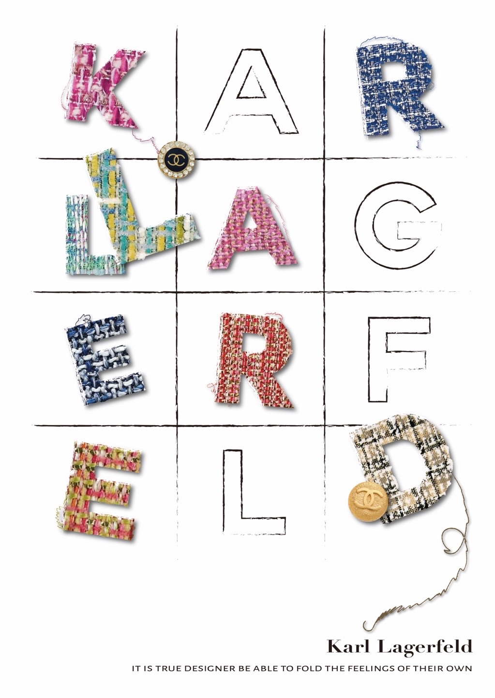
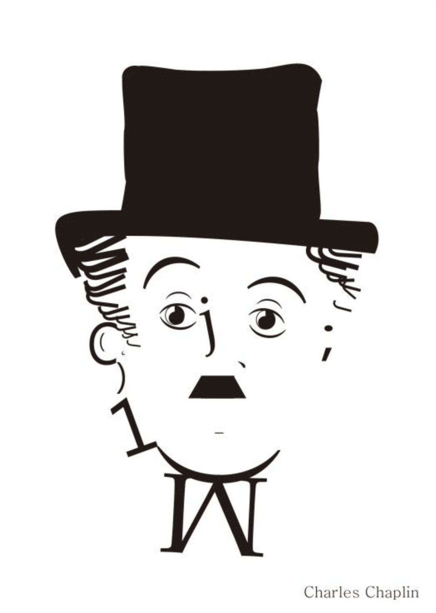

Welcome to su design studio!
-
'Karl Lagerfeld Poster'클로에, 발렌티노를 거쳐 샤넬의 수석디자이너 자리에 올랐던 칼 라거펠트는 당시 '무너진 제국'으로 불리던 샤넬을 다시 일으켜 전성기를 맞이하게한 인물이다. 특히, 그는 격식있는 옷을 디자인 할 때 주로 사용되던 트위드천을 평상복에 적용함으로써 큰 인기를 끌었고 '트위드의 거장'이라고도 불렸다. 이러한 칼 라거펠트의 특징을 그의 이름을 활용한 타이포그래피 포스터에 담아보고자 했다.
-
'Charles Chaplin'오직 타이포그래피의 요소들만 사용하며 표현한 찰리 채플린이다. 알파벳부터 기호까지 다양하게 사용했으며 그의 모자와 콧수염을 강조하고자 면 처리된 기호들을 사용하였다. 색은 전체적으로 블랙앤 화이트 느낌으로 흑백 사진같은 분위기를 자아냈다.
-
'MARES advertising poster1'스쿠버 다이빙 브랜드인 '마레스'의 플루이다 오리발 광고 포스터이다. 실제 오리도 수영을 할 때 오리발을 사용한다는 재밌는 아이디어를 담았고 2개의 시리즈로 구성되 있으며 해당 포스터는 초보자를 대상으로 하여 발랄한 분위기의 새끼오리 이미지를 사용했다.

-
'MARES advertising poster2'스쿠버 다이빙 브랜드인 '마레스'의 플루이다 오리발 광고 포스터이다. 실제 오리도 수영을 할 때 오리발을 사용한다는 재밌는 아이디어를 담았고 2개의 시리즈로 구성되 있으며 해당 포스터는 전문가를 대상으로 하여 보다 차분하고 날쌘 느낌의 오리 이미지를 사용했다.

-
'Octopus+Egg'O와 E에 해당하는 영어 단어를 한 개씩 골라서 이미지를 합성한 것이다. 문어의 머리에 윗 부분이 깨진 계란을 합성하여 재밌는 형태를 만들었고 문어 다리부분에 물방울을 추가하여 헤엄치는 듯한 느낌을 주었다.

-
'Mr, Coupang man poster'코로나로 힘든 시기에 특히 더 고생하고 계신 쿠팡의 택배기사 '쿠팡맨'들을 응원하는 캠페인 포스터이다. QR코드를 찍으면 쿠팡맨에게 응원의 메세지를 남길 수 있는 페이지가 나타나고 이달의 쿠팡맨 사진을 볼 수 있으며 쿠팡맨에게 음료를 제공할 수 있는 기능도 확인 할 수 있다.